6.810 Engineering Interactive Technologies (fall 2018)
Video Taking + Editing
Upload 1 (due end of class, Nov. 16, 2.30pm):
upload your video storyboard + a first version of your 1 minute video of your touchpad.
Upload 2 (due end of class, Nov. 21, 1pm):
final 1 minute video of your touchpad
Goal for Today:
We are going to shoot + edit a 1 minute video of your touchpad today.
We will show you how to cut the video and create text overlays etc.
This is work in progress, I will remove this line when I'm done.
Step 1: Draw a Short Storyboard (5 min)
Take a piece of paper and sketch out the scenes you are planning to shoot.
- What do you want to show in which scene?
- What would you label in the image?
- Which text should be at the bottom?
We suggest making three sections:
- hardware functionality (similar to your pset2 video, potentially label LEDs, switch etc.)
- OpenCV thresholding (similar to your pset3 video)
- Application (similar to your pset4 video)
Here's an example we created for our touchpad:
Replace with touchpad storyboard.

Storyboards do not necessarily have to be hand-drawn.
You could also make rotoscopes, or use images directly (either from the internet or
in your specific case where you already have the implemented touchpad ready, you could also snap photos from the prototype and take some screenshots and use them in the storyboard).
Replace with touchpad photo storyboard.

Step 2: Animatics
An animatic is an animated storyboard to get a better feeling for the timing and length of the scenes in a video. Most often, it literally consists of all the images from the storyboard assembled into a video with each image being played for a different number of seconds. Sometimes voices and sound effects are already added since they contribute a lot to the mood of a video.
Due to time reasons we will not do this today, but we thought we let you know that this tends to be used not only in hollywood movies but is also very standard for any type of product marketing video since it's much cheaper to produce than the actual video.
Play both videos at the same time:
And sometimes these animatics are even made using cheap 3D animation (yes it was probably cheaper to do it this way than 'rent' this guy for a day).
Compare these
... or a mash up of 3D animation, pictures and other footage.
Step 3: Shoot Video (15 min)
Let's go for it and shoot the video scenes from your video storyboard.
Read the tips below before you get started.
Clean Background
Same as with the photos, use a clean backdrop and make sure there is no crap in the image that shouldn't be there.
Never Zoom
Yes, you can zoom to find a good image frame *before* you start recording, but *after* you hit the record button you should never ever zoom. Video material that uses zooming will immediately make you look unprofessional.
The reason for this is that the very act of zooming has no equivalent in the human eye (our eyes cannot zoom in and out) and thus the material will always look unnatural.
Always use a tripod
Please always use a tripod, otherwise your video will be shaky.
Make sure the water balance is leveled.
Shoot every scene multiple times
I always shoot every scene 3 times just in case something went wrong and I didn't notice. I also ideally slightly vary the action (e.g. come into the frame with the finger a little steeper or flatter).
Keep the placement of sub-titles and labels in mind!
Keep in mind you will put subtitles in the lower half of the video later on.
If you planned to put labels somewhere, did you leave enough space in the frame?
Step 4: Edit Video
We are going to use Adobe Premiere Pro.
To get started, download this template project here.
After opening the Premiere Project file, you should see something like this:
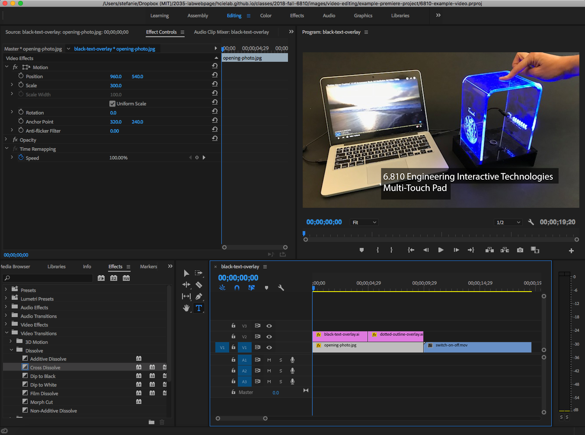
Adding your Video Material
In the first step, drag some of your video material (or a photo) onto the video timeline here.
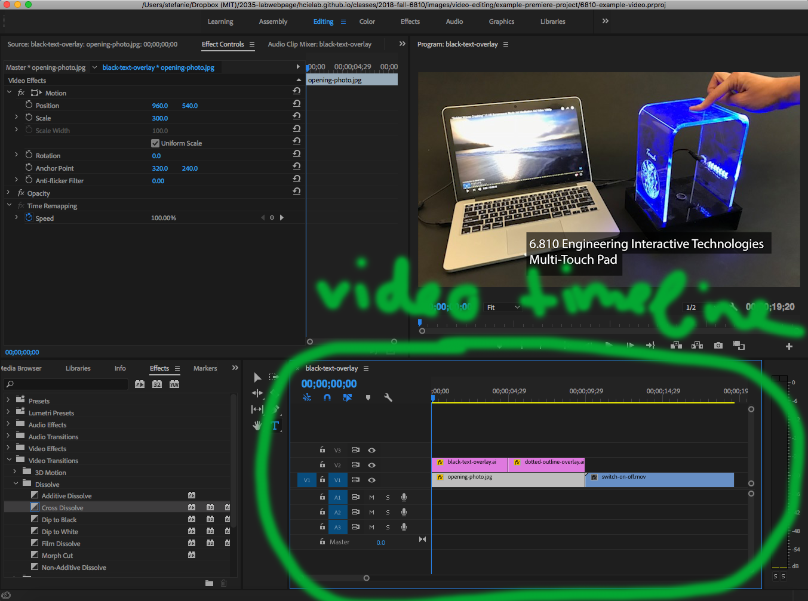
The video timeline has multiple 'tracks' (layers).
If you don't see your video material in the top window after you dragged it on the timeline, there is probably something else on top that covers it up.
Adding Text, Outlines, etc.
You can drag almost any file type onto the timeline (e.g. jpg, svg).
I typically create my text in Illustrator, then drag the Illustrator file onto the timeline.
This black-text-overlay.ai Illustrator file on the timeline corresponds to the '6.810 Engineering Interactive Technologies - Multi-Touch Pad' text.
 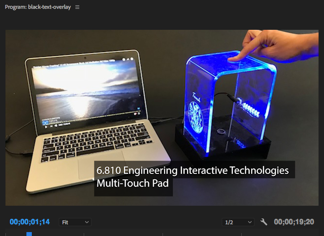
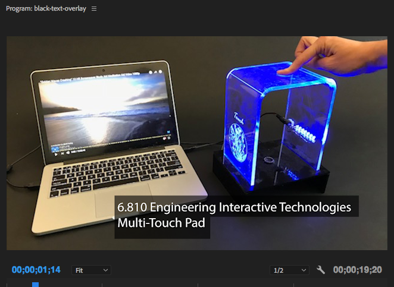
To edit it, I right-click onto the black-text-overlay.ai on the timeline and then click 'Edit Original', which opens the file in Illustrator.
In Illustrator I change the file, save it, and when I go back to Premiere it will update automatically (see below).
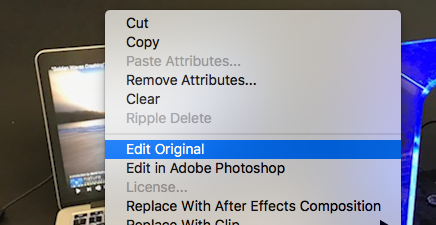
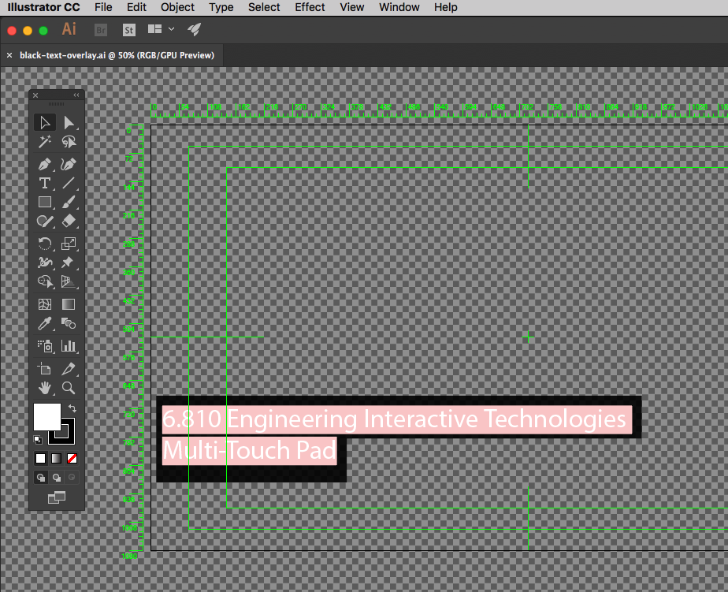
In the same way, you can add any type of drawing onto your video.
Here I drew a dotted white outline in Illustrator that highlights the touchpad and then overlaid it with the video file (see below).
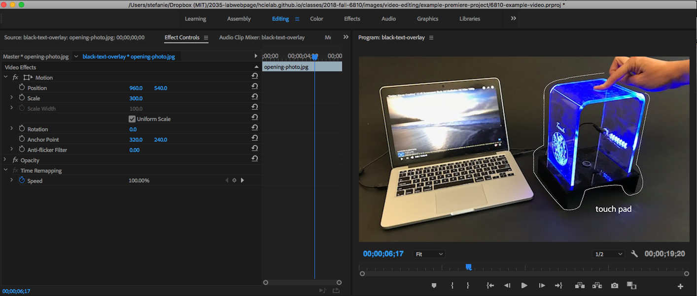
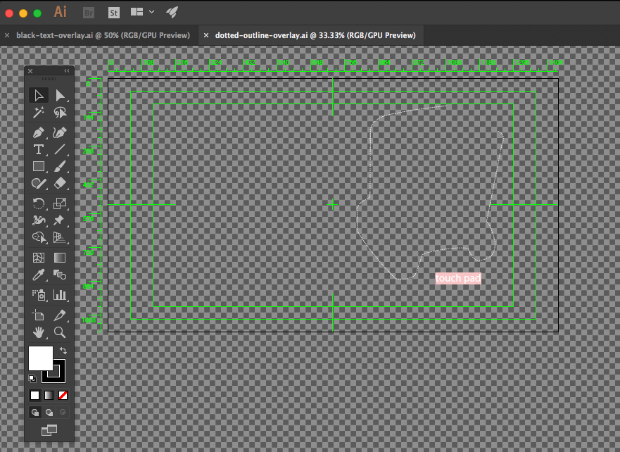
Moving and Scaling Elements
If you are not happy with the placement of the text, you can also move it around in Premiere or scale it by going to 'Effects Controls' and then change the slider values under position and scale.
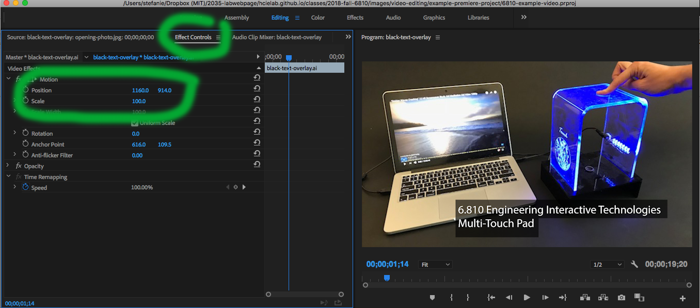
Changing the position of the black title bar:
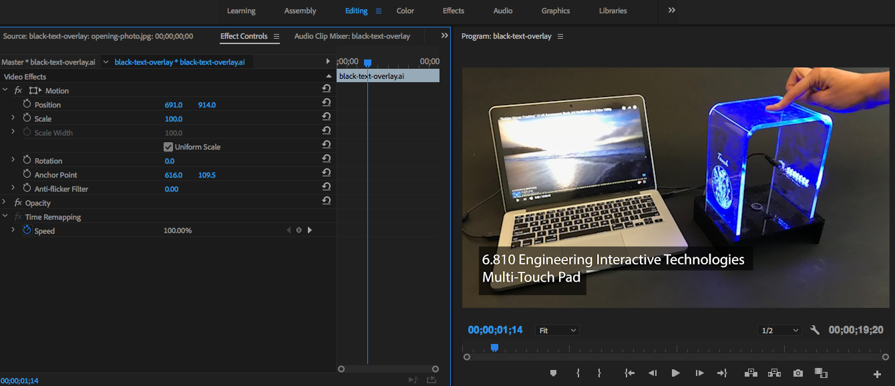
And making it bigger:
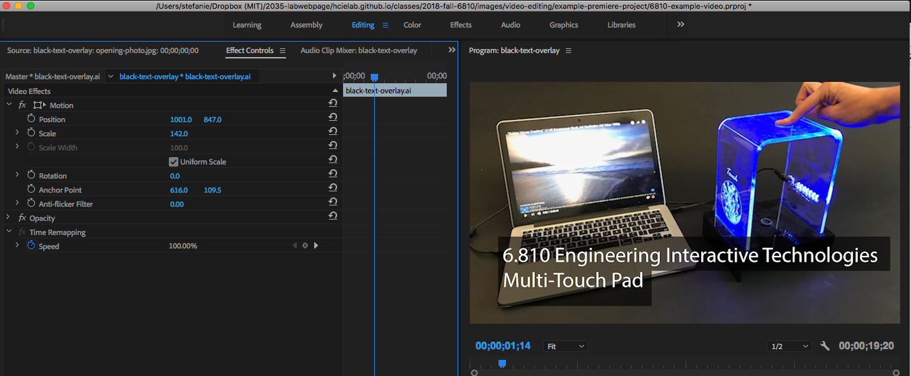
You can do the same thing with any element in the video timeline.
Here I first double clicked the opening photo, then used scale to make the photo smaller and position to move it above the text.
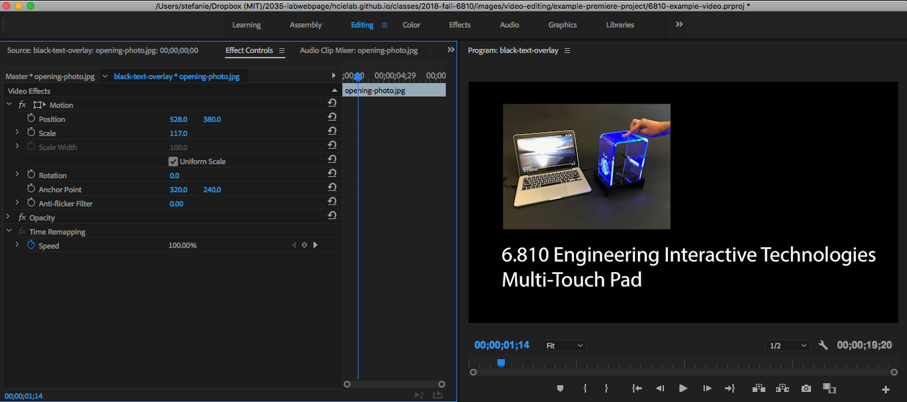
Dip to Black, Cross-Dissolve and other Transitions
Transitions are really useful when you have a logical break, e.g. you show the OpenCV tracking and have multiple scenes about it, and then afterwards you show the application with multiple scenes. In-between these two steps it would be good to add a dip to black or other transition to show to the viewer that a new chapter starts.
To do this, click on 'Effects', then 'Video Transitions' and then drag e.g. the Dip to Black' between two video-snippets on the timeline.
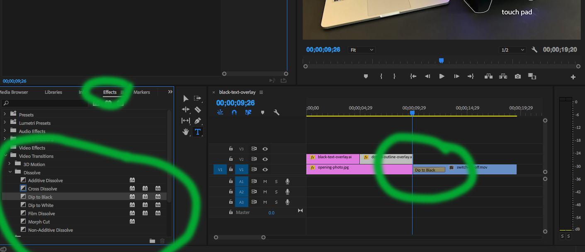
Which should give you something like this:
 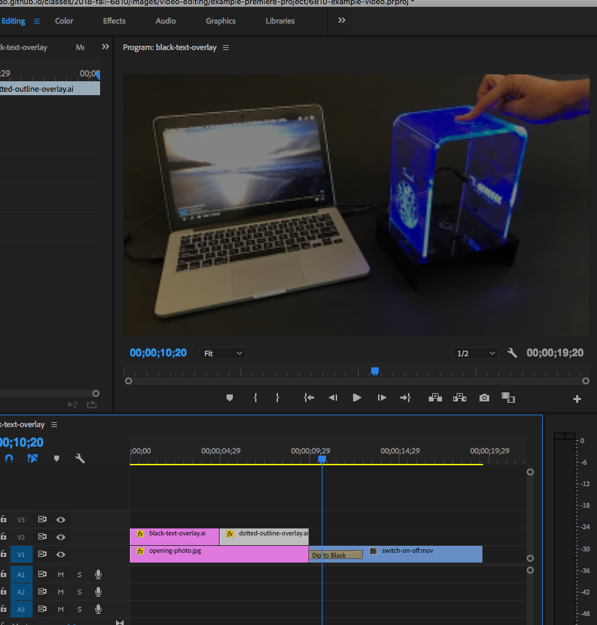
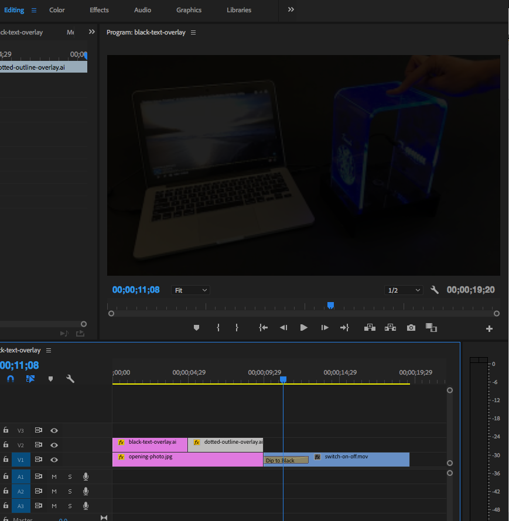
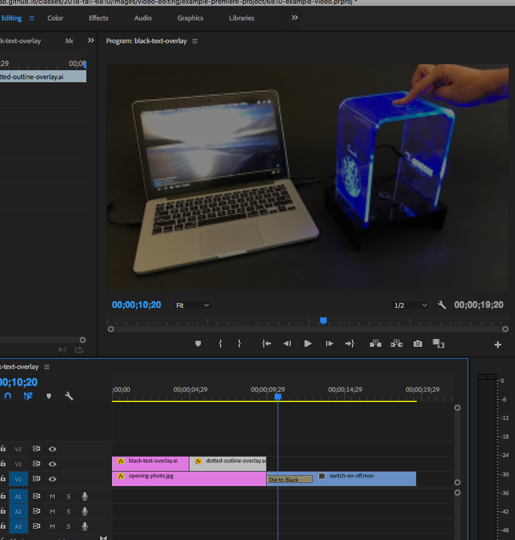
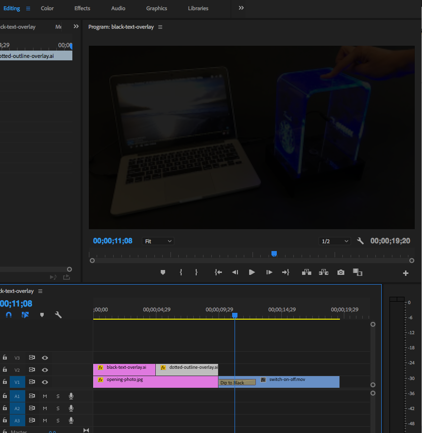
Step 5: Add Music
Videos are often more fun with music.
Websites, such as Jamendo.com, provide many free sound files as long as you distribute your own work under creative commons license as well.
Otherwise you might have to pay, depending on the platform you use.
Same as for photos: Do not have people question if you cut something out!
I (and many others) who review hundreds of materials (videos, papers) every year can see in a second if something did not work. Please don't get yourself into the situation where an investor (or in this case your instructor) is questioning if your prototype really worked.
Here's an example from some good friends of mine whose work I truly admire.
However, in their video, when they remove the support material, you can clearly see they didn't want to show just how exhausting and time consuming it is to take the support material off. There are many cuts while the support material is removed (with some blending in-between) and half-way through the scene is completely cut off and *tata* the object is ready and on the table.
Example Videos
Here are some videos from 6.810 students (former 6.S063) from last year (they had a different project). I leave it up to you if you want to do it Kickstarter Style, i.e. talk to the camera, or do a voice over, or do no voice over and instead overlay text + use some music (see below research videos).
Here are a few videos (including some music) from when I was a PhD student.
upload your video storyboard + a first version of your 1 minute video of your touchpad.
final 1 minute video of your touchpad